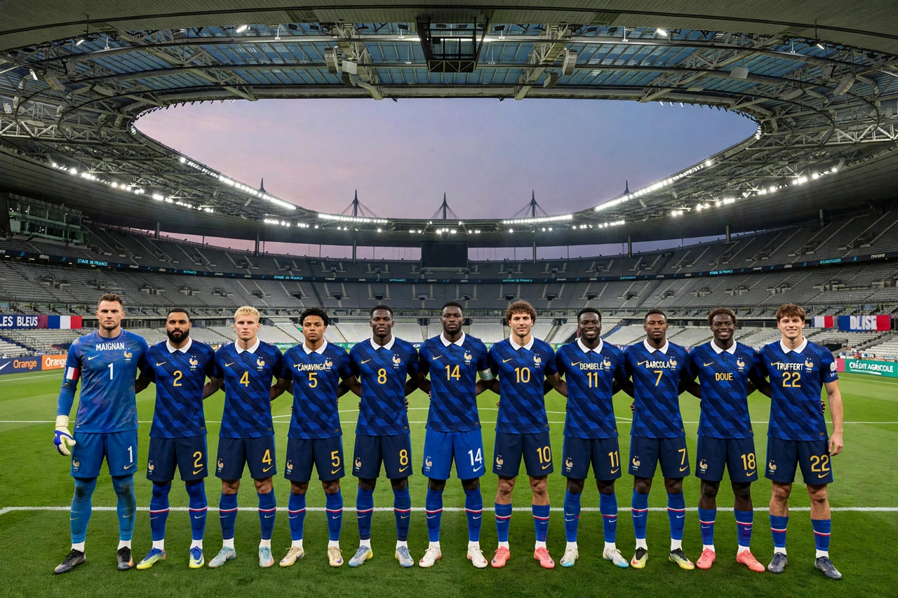

| France national football team | |
| Nickname | Les Bleus (The Blues) |
|---|---|
| Association | French Football Federation (FFF) |
| Confederation | UEFA (Europe) |
| Head coach | Didier Deschamps (since 2012) |
| Captain | Kylian Mbappé |
| Home stadium | Stade de France, Saint-Denis |
| Major honours | FIFA World Cup: 1998, 2018; UEFA European Championship: 1984, 2000; UEFA Nations League: 2021; FIFA Confederations Cup: 2001, 2003 |

The France national football team represents France in men's international football and is controlled by the French Football Federation. Nicknamed Les Bleus for their blue shirts, France is one of the most successful national teams in the world, having won two FIFA World Cups (1998 and 2018), two European Championships (1984 and 2000), and the UEFA Nations League (2021).
France played its first official match in 1904 (a 3–3 draw with Belgium) and was a founding participant in the first World Cup in 1930, where Lucien Laurent scored the tournament's first-ever goal. The team first shone in 1958, finishing third in Sweden behind Just Fontaine, whose 13 goals remain a single-tournament World Cup record. A golden generation led by Michel Platini won Euro 1984 on home soil.
The modern era began under Aimé Jacquet: captained by Didier Deschamps and inspired by Zinedine Zidane, France won the 1998 World Cup at home, beating Brazil 3–0 in the final at the new Stade de France, and added Euro 2000. After the high of a 2006 World Cup final (lost to Italy on penalties amid Zidane's infamous headbutt) and the disgrace of a player strike at the 2010 World Cup, Deschamps — appointed coach in 2012 — rebuilt the side: runners-up at Euro 2016, champions at the 2018 World Cup in Russia with a young team spearheaded by Kylian Mbappé, Nations League winners in 2021, and finalists again at the 2022 World Cup, losing an epic final to Argentina on penalties despite Mbappé's hat-trick.
The celebrated 1998 team was hailed as Black-Blanc-Beur (Black-White-Arab), symbolizing multicultural France; the diversity of French squads — drawing on the country's banlieues and its global francophone talent pool, and developed through the national academy system centered on Clairefontaine — remains a defining feature and occasional political flashpoint. France's all-time leading scorer is Olivier Giroud, who surpassed Thierry Henry's record in 2022.